What was investigated?
A steel cantilever beam, connected to a shaker and monitored with an accelerometer, was first displaced and released to observe free decaying oscillations. In a second experiment, the shaker excited the beam at a range of frequencies to locate resonance and measure the response amplification. Results were compared with a single-degree-of-freedom (SDOF) analytical model.
The report documents experimental setup and procedure, beam properties, damping and natural-frequency calculations, two measured forced-response trials, and comparison with the theoretical predictions. These results are experimental and workbook-reported—not independently repeated laboratory measurements.
Original laboratory photographs
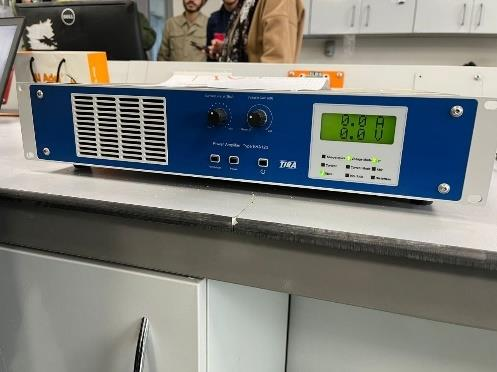
The experimental setup uses a cantilever beam with vibration measurement equipment. The original report identifies the shaker, function generator and power supply.
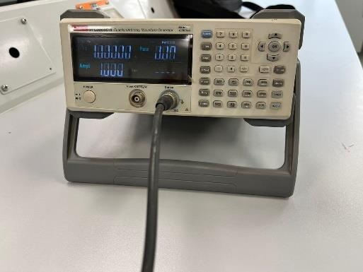
Original photograph showing a component of the vibration testing equipment.
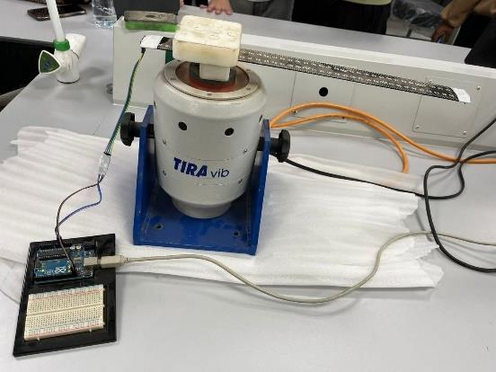
Original photograph documenting the experimental laboratory hardware.
Beam properties and reported calculations
| Quantity | Reported value | Significance |
|---|---|---|
| Material density ρ | 7,750 kg/m³ | Used to calculate beam mass |
| Young's modulus E | 200 GPa | Elastic bending stiffness |
| Beam width b | 38.6 mm | Cross-section width |
| Beam thickness h | 1.4 mm | Strongly affects bending stiffness |
| Beam length L | 28.5 cm | Free cantilever span |
| Reported equivalent mass | 0.0597 kg | SDOF mass approximation |
| Reported equivalent stiffness | 228.79 N/m | Cantilever stiffness approximation |
| Measured damped period | 0.121773 s | Used to estimate oscillation frequency |
| Logarithmic decrement δ | 0.06261 | Reported mean after excluding first trial |
| Damping coefficient c | 0.0736 kg/s | Report's equivalent damping result |
Source: supplied 17-page report, free vibration calculations on pages 6–7. The report uses both 228.79 N/m and 225.24 N/m for equivalent stiffness in different calculations; this internal inconsistency is explicitly retained rather than silently corrected.
Reported logarithmic-decrement result
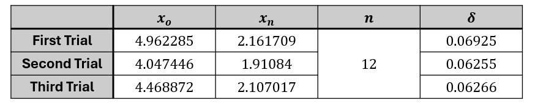
Embedded results image used in the report to estimate logarithmic decrement across three trials. The first trial was excluded as an outlier in the reported calculation.
Free-vibration results
After a small initial displacement, the beam was released. Its response was represented by the underdamped SDOF equation m ẍ + c ẋ + k x = 0. Both supplied workbooks use initial displacement 0.015 m, zero initial velocity and damping ratio 0.009964. The reported experimental natural frequency is approximately 16.65% below the theoretical frequency.
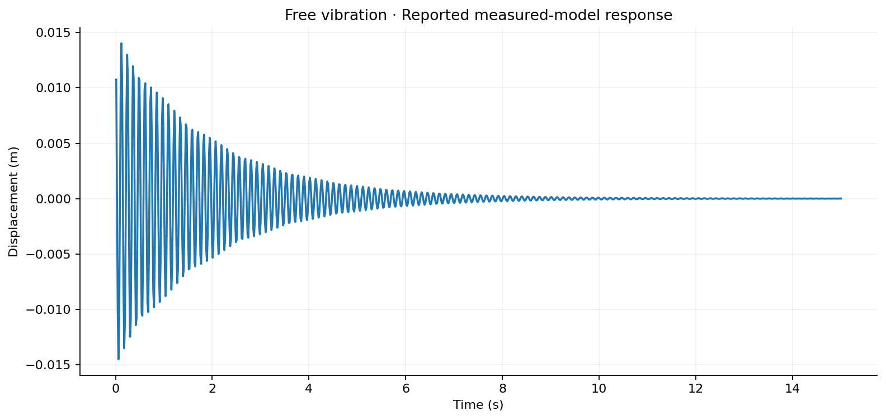
Oscillations decay in amplitude over time, consistent with an underdamped response. This workbook curve uses the reported experimental frequency and damping ratio; it is not raw sensor displacement data.
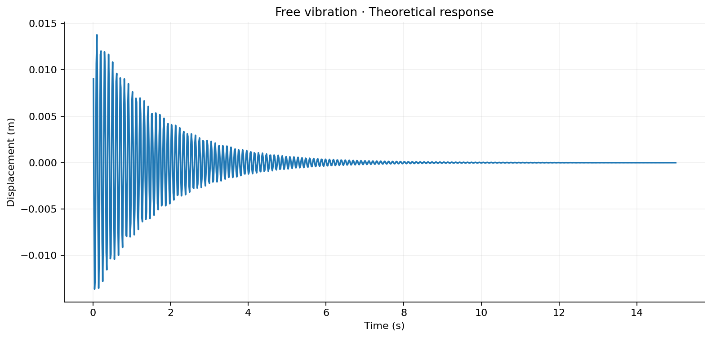
The theoretical curve oscillates at the higher natural frequency reported in the project (61.906 rad/s). Both curves use the same damping ratio, so their time envelopes can differ due to frequency.
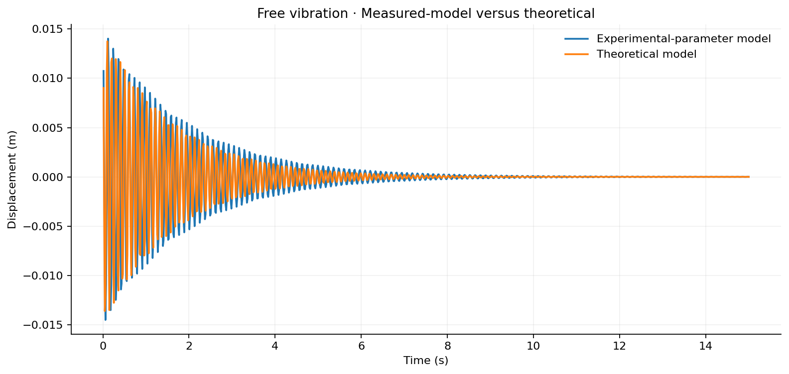
Both responses decay; the frequency mismatch produces phase drift. The measured-model frequency is 51.6 rad/s versus 61.906 rad/s theoretically (approximately 16.65% lower).
All three original plots extracted from the PDF
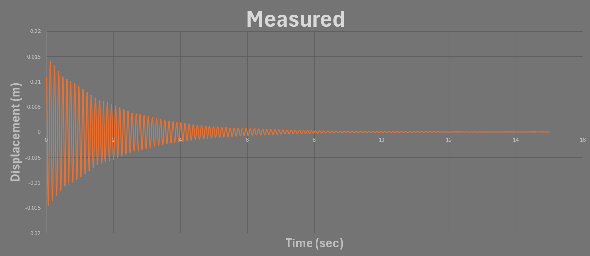
The experimental-parameter response decays over time; compare it with the high-resolution graph recreated from the supplied workbook.
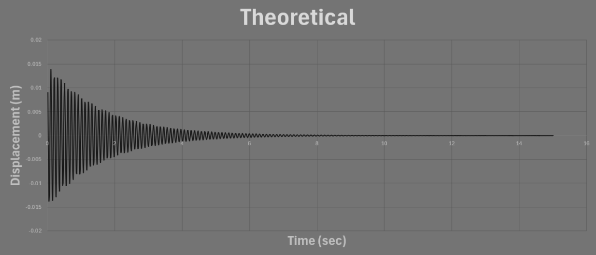
The theoretical damped response has a visibly different oscillation period because its frequency is higher.
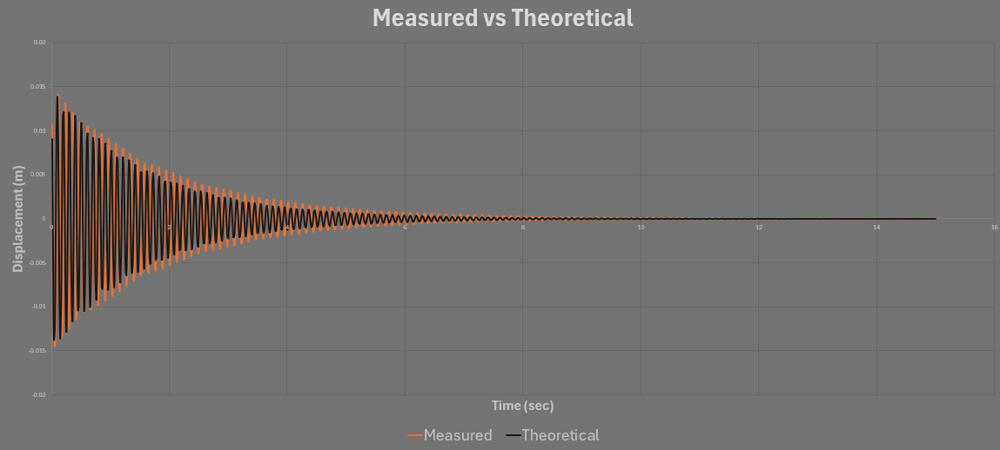
The overlaid traces illustrate frequency and phase differences between the two response models.
Interpretation: The workbook's “Measured” sheet is a reconstructed damped response using experimental parameters, not a direct import of all individual accelerometer readings. This distinction is made visible to avoid presenting the modeled curve as raw laboratory output.
Forced-vibration and resonance
The beam was excited at increasing shaker frequencies, and the ratio of free-end to fixed-end acceleration, X/Y, was plotted versus normalized frequency r = ω/ωₙ. The supplied workbooks contain 26 data points per curve. Both measured trials show distinct resonant peaks, while the theoretical curve predicts a narrower and taller resonance region.
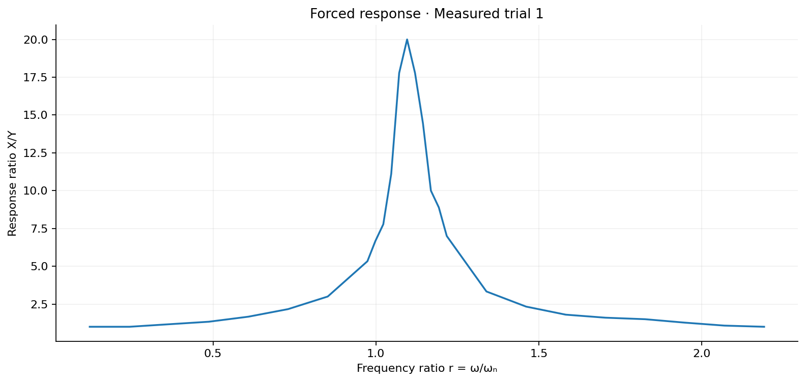
Reported response ratio peaks at 20 near frequency ratio 1.096 (9 Hz). This peak is shifted above the nominal measured natural-frequency ratio r=1.
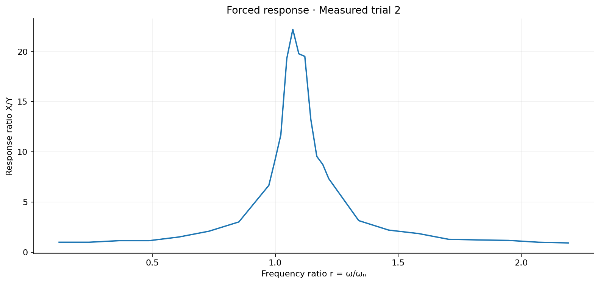
Reported response ratio peaks at approximately 22.222 near r=1.072 (8.8 Hz), with the same broad resonance pattern.
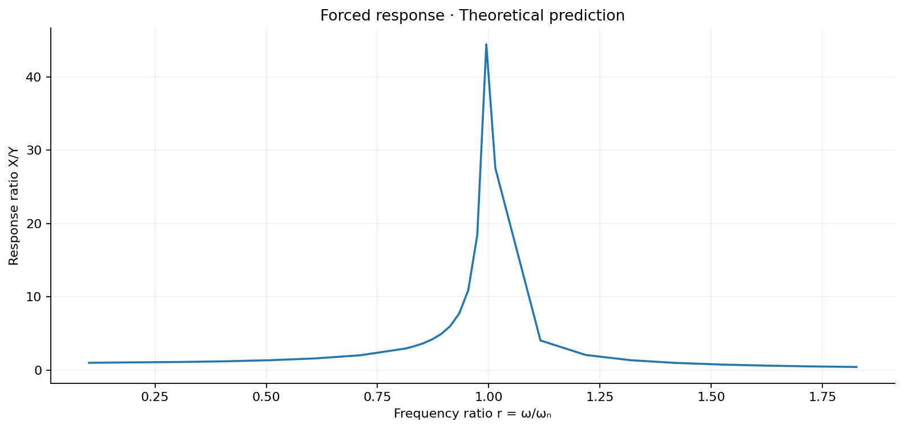
The theoretical workbook peaks sharply at 44.44 near r=0.995 (9.8 Hz), illustrating the strong predicted amplification for low damping.
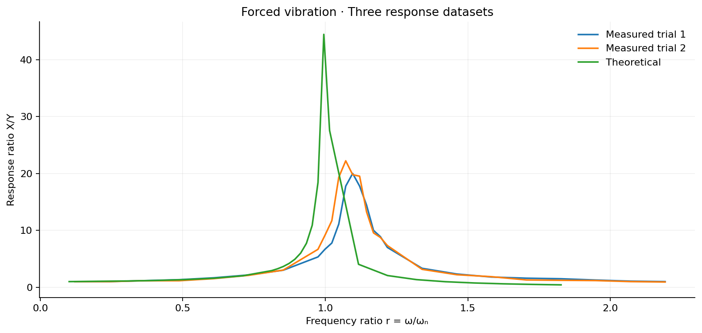
The measured response peaks are both lower and occur at greater normalized frequency ratios than the reported theoretical peak. The measured inputs use ωₙ=51.6 rad/s; the theoretical uses ωₙ=61.906 rad/s, so normalization is by different reference frequencies.
All four original forced-response figures extracted from the PDF
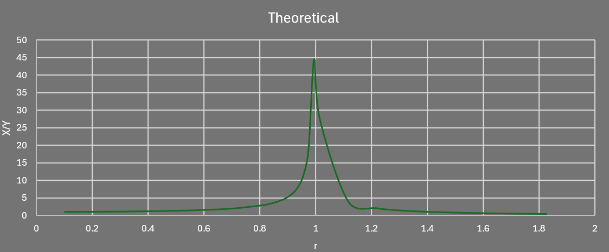
A pronounced resonance peak occurs at a ratio slightly above one.
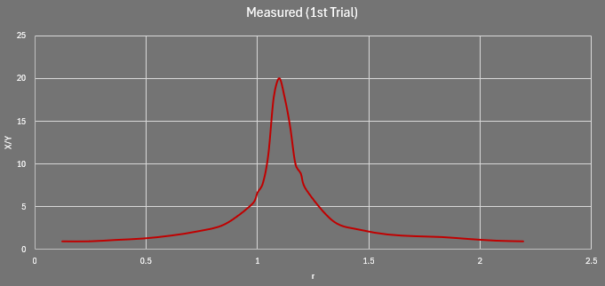
The second trial confirms a similar peak and provides an experimental repeat.
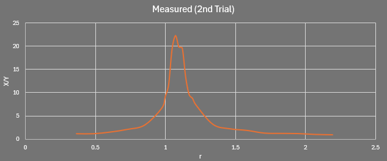
The theoretical ratio rises sharply near r=1, as expected for the low reported damping ratio.
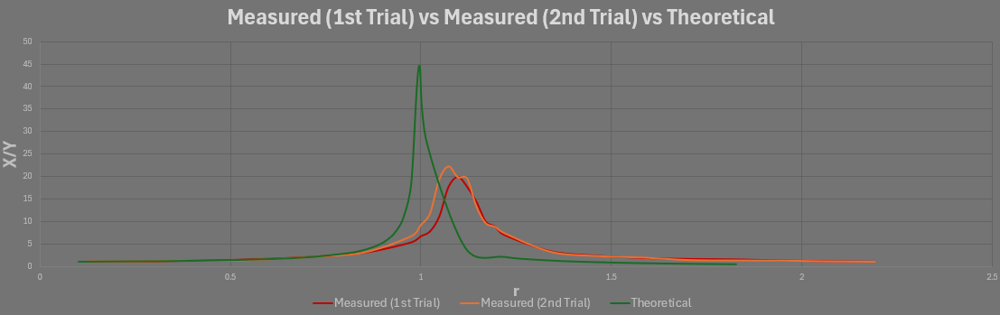
Original report figure compares both measured curves with the theoretical model; the supplied workbook allows a higher-resolution recreation.
Data-quality note: The numerical tables show a larger theoretical peak than both experimental peaks. A sentence in the report claims the experimental peak was higher; the portfolio uses the supplied tabulated peak values and identifies that inconsistency. The curves also use different natural frequencies when calculating r, so peak locations should be compared carefully.
Complete tables and calculations
Every supplied spreadsheet point is preserved. Open the tables below for all 26 forced-vibration rows; the complete 1,000-point free-vibration curves are provided as CSV files for inspection and reuse.
Measured trial 1 · 26 data rows Open table
| Frequency ratio r | Free-end acceleration (g) | Fixed-end acceleration (g) | Ratio X/Y |
|---|---|---|---|
| 0.121767 | 0.015 | 0.015 | 1 |
| 0.243534 | 0.04 | 0.04 | 1 |
| 0.365301 | 0.07 | 0.06 | 1.167 |
| 0.487069 | 0.16 | 0.12 | 1.333 |
| 0.608836 | 0.35 | 0.21 | 1.667 |
| 0.730603 | 0.65 | 0.3 | 2.167 |
| 0.85237 | 1.2 | 0.4 | 3 |
| 0.974137 | 2.4 | 0.45 | 5.333 |
| 0.998491 | 3 | 0.45 | 6.667 |
| 1.02284 | 3.5 | 0.45 | 7.778 |
| 1.0472 | 5 | 0.45 | 11.111 |
| 1.07155 | 8 | 0.45 | 17.778 |
| 1.0959 | 9 | 0.45 | 20 |
| 1.12026 | 8 | 0.45 | 17.778 |
| 1.14461 | 6.5 | 0.45 | 14.444 |
| 1.16897 | 4.5 | 0.45 | 10 |
| 1.19332 | 4 | 0.45 | 8.889 |
| 1.21767 | 3.5 | 0.5 | 7 |
| 1.33944 | 2.5 | 0.75 | 3.333 |
| 1.46121 | 2.1 | 0.9 | 2.333 |
| 1.58297 | 1.8 | 1 | 1.8 |
| 1.70474 | 1.6 | 1 | 1.6 |
| 1.82651 | 1.5 | 1 | 1.5 |
| 1.94827 | 1.4 | 1.1 | 1.273 |
| 2.07004 | 1.4 | 1.3 | 1.077 |
| 2.19181 | 1.4 | 1.4 | 1 |
Measured trial 2 · 26 data rows Open table
| Frequency ratio r | Free-end acceleration (g) | Fixed-end acceleration (g) | Ratio X/Y |
|---|---|---|---|
| 0.121767 | 0.015 | 0.015 | 1 |
| 0.243534 | 0.035 | 0.035 | 1 |
| 0.365301 | 0.075 | 0.065 | 1.154 |
| 0.487069 | 0.15 | 0.13 | 1.154 |
| 0.608836 | 0.35 | 0.23 | 1.522 |
| 0.730603 | 0.65 | 0.31 | 2.097 |
| 0.85237 | 1.3 | 0.43 | 3.023 |
| 0.974137 | 3 | 0.45 | 6.667 |
| 0.998491 | 4.1 | 0.45 | 9.111 |
| 1.02284 | 5.5 | 0.47 | 11.702 |
| 1.0472 | 8.7 | 0.45 | 19.333 |
| 1.07155 | 10 | 0.45 | 22.222 |
| 1.0959 | 9.1 | 0.46 | 19.783 |
| 1.12026 | 8.2 | 0.42 | 19.524 |
| 1.14461 | 5.7 | 0.43 | 13.256 |
| 1.16897 | 4.3 | 0.45 | 9.556 |
| 1.19332 | 3.5 | 0.4 | 8.75 |
| 1.21767 | 3.3 | 0.45 | 7.333 |
| 1.33944 | 2.05 | 0.65 | 3.154 |
| 1.46121 | 1.9 | 0.86 | 2.209 |
| 1.58297 | 1.75 | 0.94 | 1.862 |
| 1.70474 | 1.55 | 1.2 | 1.292 |
| 1.82651 | 1.35 | 1.1 | 1.227 |
| 1.94827 | 1.3 | 1.1 | 1.182 |
| 2.07004 | 1.2 | 1.2 | 1 |
| 2.19181 | 1.3 | 1.4 | 0.929 |
Theoretical prediction · 26 data rows Open table
| Frequency ratio r | Calculated X | Reference Y | Ratio X/Y |
|---|---|---|---|
| 0.1015 | 0.015 | 0.015 | 1 |
| 0.20299 | 0.037 | 0.035 | 1.057 |
| 0.30449 | 0.072 | 0.065 | 1.108 |
| 0.40598 | 0.156 | 0.13 | 1.2 |
| 0.50748 | 0.31 | 0.23 | 1.348 |
| 0.60897 | 0.493 | 0.31 | 1.59 |
| 0.71047 | 0.868 | 0.43 | 2.019 |
| 0.81196 | 1.319 | 0.45 | 2.931 |
| 0.83226 | 1.462 | 0.45 | 3.249 |
| 0.85256 | 1.717 | 0.47 | 3.653 |
| 0.87286 | 1.885 | 0.45 | 4.189 |
| 0.89316 | 2.216 | 0.45 | 4.924 |
| 0.91346 | 2.761 | 0.46 | 6.002 |
| 0.93376 | 3.245 | 0.42 | 7.726 |
| 0.95406 | 4.686 | 0.43 | 10.898 |
| 0.97436 | 8.3 | 0.45 | 18.444 |
| 0.99466 | 17.776 | 0.4 | 44.44 |
| 1.01496 | 12.396 | 0.45 | 27.547 |
| 1.11645 | 2.627 | 0.65 | 4.042 |
| 1.21795 | 1.777 | 0.86 | 2.066 |
| 1.31944 | 1.268 | 0.94 | 1.349 |
| 1.42094 | 1.177 | 1.2 | 0.981 |
| 1.52243 | 0.835 | 1.1 | 0.759 |
| 1.62393 | 0.672 | 1.1 | 0.611 |
| 1.72542 | 0.607 | 1.2 | 0.506 |
| 1.82692 | 0.599 | 1.4 | 0.428 |
Free-vibration workbook samples
Free response — measured-parameter curve (first 30 samples) · 1000 data rows Open table
| Time (s) | Damping ratio | Natural frequency (rad/s) | Displacement (m) |
|---|---|---|---|
| 0.015 | 0.009964 | 51.6 | 0.0107485 |
| 0.03 | 0.000484958 | ||
| 0.045 | -0.00989565 | ||
| 0.06 | -0.0145225 | ||
| 0.075 | -0.0108677 | ||
| 0.09 | -0.00112435 | ||
| 0.105 | 0.00910554 | ||
| 0.12 | 0.0140307 | ||
| 0.135 | 0.0109477 | ||
| 0.15 | 0.00172217 | ||
| 0.165 | -0.00833583 | ||
| 0.18 | -0.0135269 | ||
| 0.195 | -0.0109906 | ||
| 0.21 | -0.00227914 | ||
| 0.225 | 0.00758756 | ||
| 0.24 | 0.0130133 | ||
| 0.255 | 0.0109985 | ||
| 0.27 | 0.00279605 | ||
| 0.285 | -0.00686168 | ||
| 0.3 | -0.0124921 | ||
| 0.315 | -0.0109734 | ||
| 0.33 | -0.00327378 | ||
| 0.345 | 0.00615897 | ||
| 0.36 | 0.0119651 | ||
| 0.375 | 0.0109175 | ||
| 0.39 | 0.00371327 | ||
| 0.405 | -0.00548013 | ||
| 0.42 | -0.0114344 | ||
| 0.435 | -0.0108327 | ||
| 0.45 | -0.0041155 |
Free response — theoretical curve (first 30 samples) · 1000 data rows Open table
| Time (s) | Damping ratio | Natural frequency (rad/s) | Displacement (m) |
|---|---|---|---|
| 0.015 | 0.009964 | 61.906 | 0.00902084 |
| 0.03 | -0.00401753 | ||
| 0.045 | -0.0136241 | ||
| 0.06 | -0.0122275 | ||
| 0.075 | -0.00113935 | ||
| 0.09 | 0.010651 | ||
| 0.105 | 0.0137608 | ||
| 0.12 | 0.00587796 | ||
| 0.135 | -0.00653156 | ||
| 0.15 | -0.0135229 | ||
| 0.165 | -0.00963949 | ||
| 0.18 | 0.00183323 | ||
| 0.195 | 0.0116387 | ||
| 0.21 | 0.0120152 | ||
| 0.225 | 0.0028363 | ||
| 0.24 | -0.0084283 | ||
| 0.255 | -0.0127884 | ||
| 0.27 | -0.00690567 | ||
| 0.285 | 0.00435714 | ||
| 0.3 | 0.0119508 | ||
| 0.315 | 0.00990801 | ||
| 0.33 | 2.87659e-05 | ||
| 0.345 | -0.00969221 | ||
| 0.36 | -0.0115326 | ||
| 0.375 | -0.00417429 | ||
| 0.39 | 0.00636638 | ||
| 0.405 | 0.0116544 | ||
| 0.42 | 0.0075838 | ||
| 0.435 | -0.00243904 | ||
| 0.45 | -0.0103398 |
All 14 embedded report images
The report contains 14 embedded image objects, including three cover graphics and the actual setup photographs and plots. Every one is preserved below or in the relevant result section. The three cover graphics are supplementary and are not presented as scientific results.
Original report, data and analysis code
Download the original PDF and both Excel workbooks. A separate companion MATLAB plotting script has been created from the supplied workbook data; it is labeled as newly generated supporting code, not as an original author-provided MATLAB file.
The supplied files did not contain original MATLAB source code. The bundled companion script plots the supplied values; it does not recreate experimental acquisition or validate the reported physics.